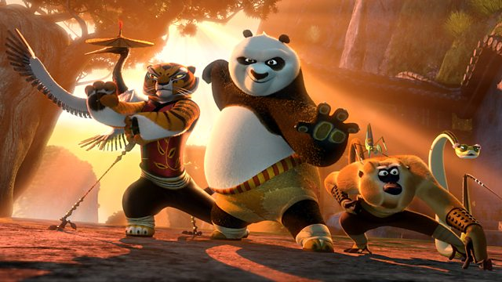

Wikipedia. Kung Fu Panda is a 2008 American computer-animated action comedy martial arts film produced by DreamWorks Animation and distributed by Paramount Pictures.1 It was directed by John Stevenson and Mark Osborne and produced by Melissa Cobb, and stars the voices of Jack Black, Dustin Hoffman, Angelina Jolie, an McShane, Seth Rogen, Lucy Liu, David Cross, Randall Duk Kim, James Hong, and Jackie Chan.
Plot
In the Valley of Peace, a land in ancient China inhabited by anthropomorphic animals, the giant panda Po is a kung fu fanatic who idolizes the Furious Five – Tigress, Monkey, Mantis, Viper, and Crane – a quintet of kung fu students trained by the red panda Master Shifu. As he helps his adoptive goose[3] father Mr. Ping in his noodle restaurant, Po is unable to pursue his dream of becoming a kung fu master himself.
Box Office
The film topped the box office in its opening weekend, grossing $60,239,130 for a $14,642 average from 4,114 theatersand performing much better than analysts had been expecting.It also was the highest-grossing opening for a non-sequel DreamWorks Animation film at the time. In its second weekend, the film retreated 44% to second place behind The Incredible Hulk grossing $33,612,594 for a $8,127 average from expanding to 4,136 theaters. It closed on October 9, 2008 after 125 days of release, grossing $215,434,591 in the United States and Canada and $416,309,969 overseas for a worldwide total of $631,744,560.